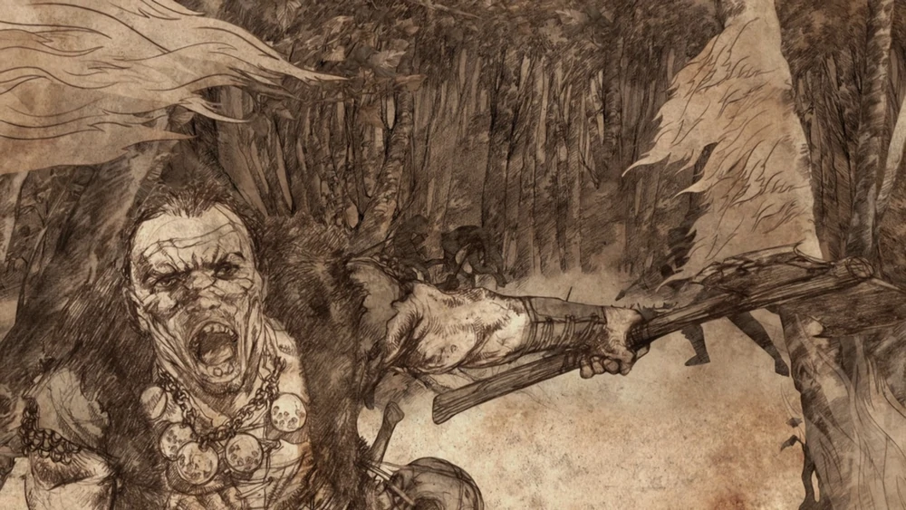
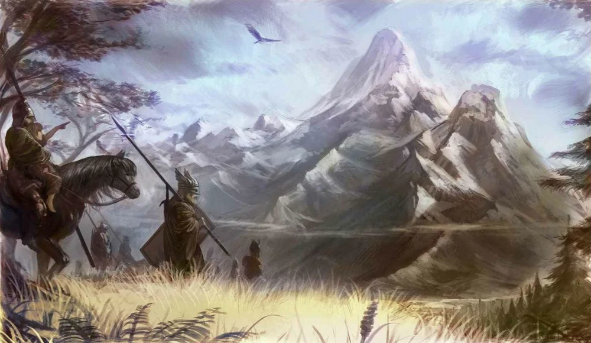
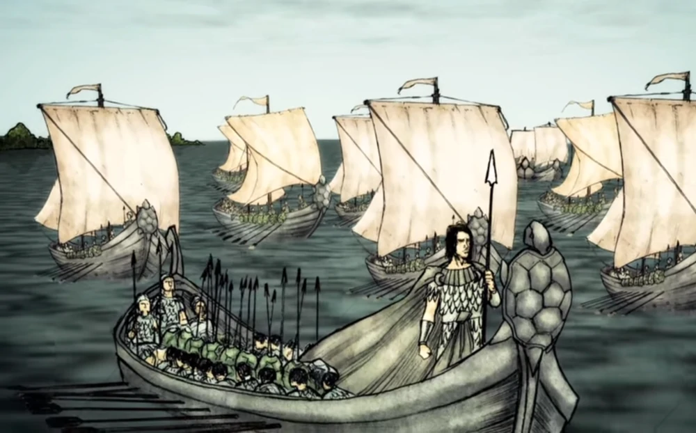
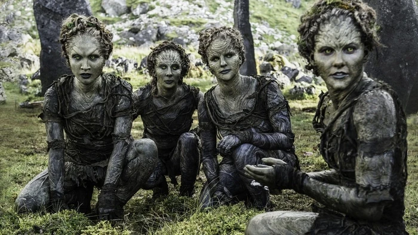
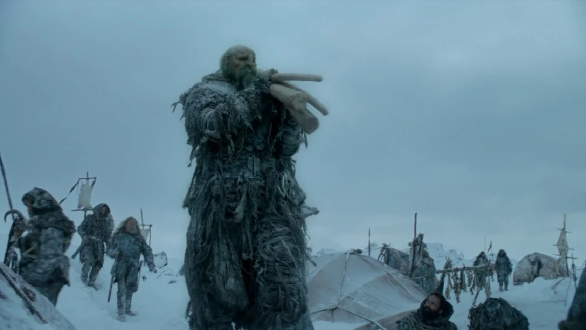
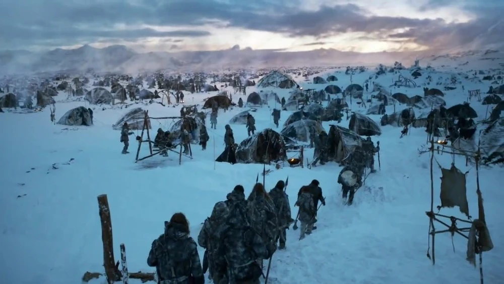

Los Primeros Hombres son uno de los tres principales grupos étnicos de los cuales desciende la población de Westeros, siendo los otros los Rhoynar y los Ándalos. Los Primeros Hombres fueron la cultura de los seres humanos que pusieron los pies por primera vez en el continente. La influencia de los Primeros Hombres continúa en Westeros, especialmente en el Norte. El Señor de los Siete Reinos, el rey en el Trono de Hierro, es el Rey de los Primeros Hombres.

Los Ándalos son otro de los tres principales grupos étnicos en Poniente. Su llegada no solo trajo la Fe de los Siete, sino que causó la caída de muchos de los reinos de los Primeros Hombres que surgieron luego del pacto con los Hijos del Bosque. El Señor de los Siete Reinos, el rey en el Trono de Hierro, emplea el título de "Rey de los Ándalos".

Son el ultimo de los tres principales grupos étnicos, de los cuales desciende la población de Poniente.. Mucho tiempo atrás, moraban en las orillas del río Rhoyne en Essos. Después de ser forzados a huir en diez mil barcos durante las Guerras Rhoynar con Valyria, los Rhoynar finalmente se establecieron en Dorne, en el sur de Poniente. Mientras que la mayor parte de los Rhoynar se integraron en la sociedad dorniense, los Huérfanos del Sangreverde han conservado su herencia y lengua rhoynar. El Señor de los Siete Reinos, el rey en el Trono de Hierro, es el Rey de los Rhoynar.

Los Hijos del Bosque son los habitantes originarios de Poniente, quienes vivían en el continente mucho antes de la llegada de los Primeros Hombres durante la Era del Amanecer. Se estima su existencia desde al menos doce mil años antes del Desembarco de Aegon; aunque su procedencia es desconocida, existían también junto con otras razas antiguas, como los gigantes.

Los gigantes son una especie de humanoides que habita en el extremo norte de Poniente, en las tierras más allá del Muro.

El Pueblo Libre es la denominación que recibe el pueblo que vive más allá del Muro. La gente al sur del Muro los ve como bárbaros y les llaman salvajes, mientras que el pueblo libre considera que éstos son débiles y blandos. Hay decenas, incluso centenares de miles de salvajes separados en cientos de tribus, clanes, pueblos y partidas de saqueadores. Algunos, como los Thenn, viven en comunidades muy unidas, mientras que otros son solitarios y vagabundos, unidos sólo por sus propias necesidades.

Para mayor información sobre estos y otros habitantes de este continente buscar en la wiki en español.